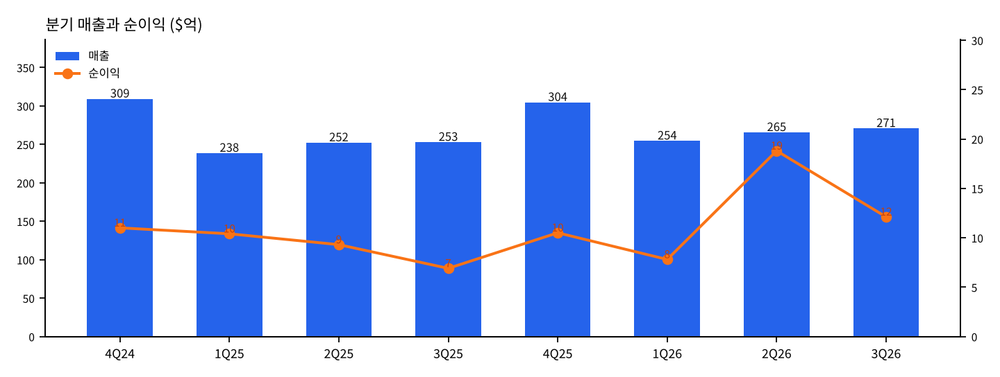
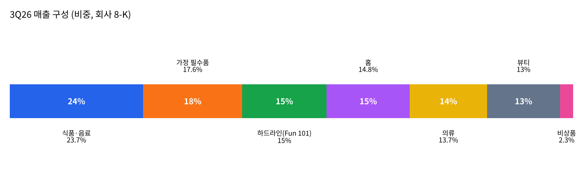
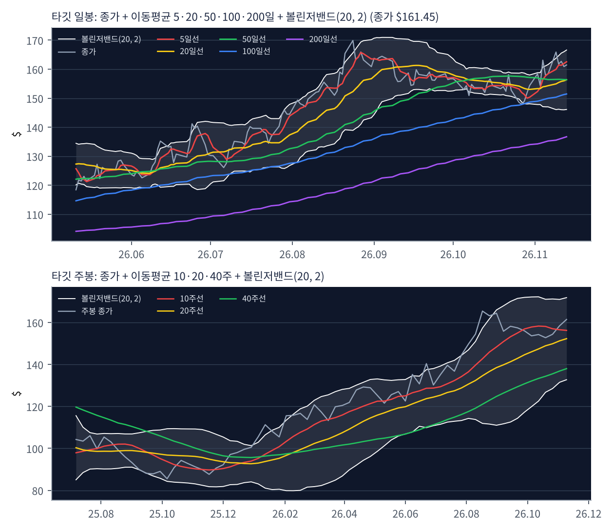

타깃은 미국 2,026개 매장과 디지털로 식품·생활용품·의류·홈·장난감을 파는 대형 할인점이다. 3분기에 비교매출이 +5.6%로 올라 세 분기 연속 개선됐지만, 이익에는 관세 환급이 크게 들어 있고 의류는 3.8% 줄었다.
| 항목 | 내용 |
|---|---|
| 종목 | Target (TGT) · NYSE · 소비재(유통) · 미네소타 미니애폴리스 |
| 멀티플 | PER 15.4배(GAAP TTM) · P/S 0.69배 (11/18 종가 $165.93) |
| 최근 분기(3Q26, 10월 말) | 매출 $270.7억(+7.1%), 비교매출 +5.6%, GAAP·조정 EPS $2.65(환급 $0.50 포함) |
| 가이던스(2026) | 매출 약 +6%, EPS $10.65~11.40(환급 $2.14 포함, 향후 환급 제외), 영업이익률 약 6.2%(환급 약 110bp 포함) |
| 현금·부채 | 현금 $44.6억, 장기부채 $141.9억 + 유동 $11.4억, 재고 $161.4억 (10/31) |
| 주주환원 | 3Q 배당 $5.27억, 자사주 $2.51억(160만 주, 평균 $155.49), 잔여 한도 약 $80억 |
| 직책 | 인물 | 역할·특징 |
|---|---|---|
| CEO | 마이클 피델케(Michael Fiddelke) | 2026.2 취임. 3Q 콜에서 비교매출과 방문객이 상반기보다 2년 기준으로 가속했다고 설명 |
| CFO | 짐 리(Jim Lee) | 11월 판매가 가이던스와 일치하고 10월보다 빨라졌다고 설명 |
| 크리에이티브 디렉터 | 아이작 미즈라히(Isaac Mizrahi) | 2026 여름 합류, 자체 브랜드 디자인 자문 |
경영 스타일: '핵심 영역에 투자를 집중해 매장 경험과 상품을 바꾼다'. 3Q에 Fun 101이 약 27%, 뷰티가 9%, 식품·음료가 약 7% 늘었다. 2027 설비투자는 $50~60억으로 잡았다.
매장이 상품 판매의 97.4%를 처리하고, 3Q 디지털 비교매출이 +9.8%다(회사 발표).
7개 우선 영역·뷰티 스튜디오·리모델링에 투자해 방문객과 비교매출을 올리는 것이 목표다. 3Q 광고 매출(Roundel)은 $2.96억으로 전년 대비 약 23% 늘었다(내 계산).
다음 실적발표는 세 가지 질문에 답하는 자리다.
1. 4Q 연말 시즌에도 매출 +5% 안팎 성장이 유지되나?
2. 환급을 빼고도 마진이 유지되나?
3. 투자 확대와 재고 증가가 매출 성장 안에서 관리되나?
한 줄 판정 규칙: 첫 질문(4Q 성장)이 유지되고 둘째 질문(환급 제외 마진)이 개선되면 약한 고리(환급 의존)가 풀린다. 둘째가 정체하면 첫째가 좋아도 이익 질 문제가 남는다.
일정: 4Q26(2026.11~2027.1월) 실적 발표일은 회사 확정 일정 확인 필요. 연간 가이던스는 이번 발표로 매출 +6%, EPS $10.65~11.40으로 상향됐다.
| 분기 | 매출 | 순이익 | EPS | 조정 EPS | 특이 사항 |
|---|---|---|---|---|---|
| 4Q24 | $309.1억 | $11.0억 | 2.41 | 2.41 | |
| 1Q25 | $238.5억 | $10.4억 | 2.27 | 1.30 | 인터체인지 수수료 소송 이익(조정 EPS에서 제외) |
| 2Q25 | $252.1억 | $9.3억 | 2.05 | 2.05 | |
| 3Q25 | $252.7억 | $6.9억 | 1.51 | 1.78 | 사업 전환 비용 $1.61억(조정 EPS에서 제외) |
| 4Q25 | $304.5억 | $10.5억 | 2.30 | 2.44 | |
| 1Q26 | $254.4억 | $7.8억 | 1.71 | 1.71 | |
| 2Q26 | $265.4억 | $18.8억 | 4.11 | 4.11 | EPS에 관세 환급 $1.65 포함 |
| 3Q26 | $270.7억 | $12.1억 | 2.65 | 2.65 | EPS에 관세 환급 $0.50 포함(세전 $3.01억) |
매출·순이익·EPS·조정 EPS 값은 기존 보고서의 트레이딩뷰 이력이고, 3Q26 값은 회사 8-K다(회계연도 기준 분기, 3Q26 = 2026.10.31 종료). 3Q26 GAAP·조정 EPS는 모두 $2.65로 같다(조정 항목 없음). 분기 설비투자는 3Q만 약 $14억으로 확인했다.

흐름 요약: 3Q26 매출은 $270.7억으로 전년 $252.7억보다 +7.1%이고 비교매출은 -2.7%에서 +5.6%로 올라섰다. 순이익은 $6.9억에서 $12.1억으로 늘었다. 환급을 뺀 3Q EPS는 약 $2.15로 전년 조정 $1.78보다 약 +21%다(회사 설명). 최근 4분기 GAAP EPS $10.77에는 환급 $2.15가 들어 있다.
| 상품군 | 돈을 버는 방식 | 3Q26 매출 | 전년 대비 |
|---|---|---|---|
| 식품·음료 | 식료품·음료 | $64.1억 | +6.6% |
| 가정 필수품 | 생활용품·위생 | $47.5억 | +4.5% |
| 하드라인(Fun 101) | 장난감·전자제품·게임 | $40.5억 | +26.8% |
| 홈 | 가구·장식 | $40.1억 | +2.5% |
| 의류 | 의류·액세서리 | $36.9억 | -3.8% |
| 뷰티 | 화장품·퍼스널케어 | $35.3억 | +9.1% |
| 비상품 | 광고(Roundel)·제휴·서비스 | $6.2억 | +19.3% |

성장은 Fun 101(+$8.6억)·식품(+$4.0억)·뷰티(+$2.9억)에서 나오고 의류만 줄었다. 비상품 매출은 $6.2억(+19%)이고 광고 매출이 $2.96억이다. 매장이 상품 판매의 97.4%를 처리한다.
타깃은 '독창적이고 가치 있는 상품과 매장·디지털 경험으로 방문객을 되찾아 새로운 성장 국면을 여는 것'을 목표로 한다.
| 축 | 내용 |
|---|---|
| 상품 | Fun 101 +27%, 뷰티 +9%, 식품 +7%. 신제품·독점 상품 8,000여 개로 연말 시즌 공략 |
| 매장 | 매장 2,026개(전년 1,995개), 소매 면적 +1.7%, 3Q 설비투자 증가는 신규·기존 매장 투자 |
| 재무 | 2026 매출 약 +6%, EPS $10.65~11.40(환급 $2.14 포함), 2027 설비투자 $50~60억 |

| 이동평균 | 값 | 종가 대비 | 위치 |
|---|---|---|---|
| 5일선 | $161.63 | +2.7% | 종가 위 |
| 20일선 | $157.67 | +5.2% | 종가 위 |
| 50일선 | $156.39 | +6.1% | 종가 위 |
| 100일선 | $152.17 | +9.0% | 종가 위 |
| 200일선 | $137.52 | +20.7% | 종가 위 |
52주 저가 $83.44(2025.11.20)에서 52주 고가 $171.91(11/18)까지 올랐고 종가 $165.93는 고가에 근접하다. 5일선($161.63)·20일선($157.67)·50일선($156.39)·100일선($152.17)·200일선($137.52)을 모두 웃돈다.
| 규칙 | 기준 | 현재 값 | 신호 |
|---|---|---|---|
| 장기 추세 필터 | 종가 vs 200일선 | $165.93 > $137.52 | 매수 |
| 중장기 교차 | 50일선 vs 200일선 | $156.39 > $137.52 | 매수 |
| 단기 교차 | 20일선 vs 50일선 | $157.67 > $156.39 | 매수 |
| 돈키언 채널 | 55일 고가 $171.91 / 저가 $145.32 | 중간값 $158.62 위 | 매수 |
| 1개월 모멘텀 | 21거래일 수익률 | +7.7% (기준 $154.00) | 매수 |
| 3개월 모멘텀 | 63거래일 수익률 | +4.9% (기준 $158.25) | 매수 |
| 6개월 모멘텀 | 126거래일 수익률 | +35.6% (기준 $122.33) | 매수 |
| 12개월 모멘텀 | 252거래일 수익률 | +87.5% (기준 $88.48) | 매수 |
| 종합 (8개 평균) | +1.00 | 강한 매수 |
해석: 매수 신호 8개(장기 추세 필터, 중장기 교차, 단기 교차, 돈키언 채널, 1개월 모멘텀, 3개월 모멘텀, 6개월 모멘텀, 12개월 모멘텀), 매도 신호 0개(없음). 8개 신호가 모두 매수다. 14일 ATR $6.21 (3.7%), 52주 고가 $171.91 · 저가 $83.44.
| 가격 | 기준 | 무엇이 바뀌나 |
|---|---|---|
| $171.91 | 55일 고가 | 돌파 시 채널 상단 갱신 |
| $158.62 | 돈키언 중간값 | 55일 채널 중간값 위/아래로 신호가 바뀜 |
| $158.25 | 3개월 모멘텀 기준가 | 종가가 이 가격 위면 3개월 신호 매수 |
| $154.00 | 1개월 모멘텀 기준가 | 종가가 이 가격 위면 1개월 신호 매수 |
| $145.32 | 55일 저가 | 이탈 시 채널 하단 갱신 |
| $137.52 | 200일선 | 종가가 이 선 위/아래인지로 장기 추세 신호가 바뀜 |
| $122.33 | 6개월 모멘텀 기준가 | 종가가 이 가격 위면 6개월 신호 매수 |
| $88.48 | 12개월 모멘텀 기준가 | 종가가 이 가격 위면 12개월 신호 매수 |
가격 수준은 신호가 바뀌는 기준선일 뿐 진입·청산 가격 제안이 아니다. 20일/50일 교차는 이동평균 자체가 움직여 단일 가격으로 표시하지 않았다. 일봉·주봉은 종가 기준 직접 계산(고저 데이터 미사용)이다.
| 악재 요인 | 내용 | 강도 |
|---|---|---|
| 일회성 환급 의존 | 3Q EPS $2.65 중 $0.50, 연간 EPS 가이던스 $10.65~11.40 중 $2.14가 관세 환급. 환급 제외 마진·EPS가 실제 체력 | 높음 |
| 의류 감소 | 3Q 의류 매출 -3.8%($36.9억), 홈 +2.5%에 그침 | 중간 |
| 경쟁 | 월마트·코스트코와 가격·비교매출 경쟁 | 중간 |
| 투자·재고 부담 | 2027 설비투자 $50~60억, 재고 +8.4%(매출 +7.1%) | 중간 |
| 높은 기저 효과 소멸 | 전년 3Q 비교매출 -2.7%의 낮은 기저에서 올라선 값이라 4Q부터 기저가 높아짐 | 참고 |
| 티커 | 회사 | PER(TTM) | PEG | P/S | EPS 성장(YoY) |
|---|---|---|---|---|---|
| TGT | 타깃 | 15.4배 | 0.50 | 0.69배 | +31% |
| WMT | 월마트 | 46.4배 | 11.07 | 1.37배 | +4% |
| COST | 코스트코 | 53.3배 | 3.76 | 1.60배 | +14% |
| DG | 달러제너럴 | 17.4배 | 0.41 | 0.68배 | +42% |
| DLTR | 달러트리 | 16.9배 | – | 1.34배 | – |
| BJ | BJ's 홀세일 | 24.1배 | 4.75 | 0.62배 | +5% |
비교 결론: 타깃 PER 15.4배(GAAP)는 월마트(46.4배)·코스트코(53.3배)보다 낮고 달러제너럴(17.4배)과 비슷하다. 타깃 행의 PEG 0.50·성장 +31%는 환급이 포함된 GAAP 값이고, 환급 제외 조정 EPS 기준은 PEG 1.17·성장 +16%다(10항목 PEG 심층 표). 동종 값은 11/13 트레이딩뷰 값으로 이번에 갱신하지 못했고, 월마트는 11/19에 실적을 발표해 배수가 바뀔 수 있다.
타깃은 영업현금흐름이 설비투자를 웃돌고(9개월 OCF $57.3억, 설비투자 $37.6억) 현금 $44.6억을 보유한다. 부채는 장기 $141.9억에 유동 $11.4억이다.
| 지표 | 값 | 계산·출처 | 해석 |
|---|---|---|---|
| 현금 | $44.6억 | 10/31 8-K | 전년 $38.2억 |
| 부채(장기 + 유동) | $153.3억 | $141.9억 + $11.4억 | 순차입 약 $108.7억(내 계산, 리스 제외) |
| 9개월 잉여현금흐름 | $19.7억 | OCF $57.3억 − 설비투자 $37.6억(내 계산) | 전년 9개월 $6.4억 |
| 재고 | $161.4억 | 전년 $149.0억 | +8.4%, 매출 +7.1%보다 빠름 |
| 3Q 배당·자사주 | $5.27억 · $2.51억 | 8-K | 잔여 한도 약 $80억 |
| 기준 | 매출 | P/S | 비고 |
|---|---|---|---|
| 내 계산(11/18 종가 기준 ÷ 최근 4분기 매출) | $1,095.0억 | 0.69배 | 4Q25~3Q26 합계 |
| 동종(11/13 트레이딩뷰) | – | 0.62~1.60배 | WMT 1.37, COST 1.60, DG 0.68, DLTR 1.34, BJ 0.62 |
해석: 타깃 P/S 0.69배는 월마트·코스트코보다 낮고 달러제너럴·BJ와 비슷하다. 영업이익률(약 6%)이 낮아 매출 대비 가격이 낮게 형성돼 있다(내 해석).
이번 작업에서는 EBITDA 수치를 갱신하지 못해 영업이익으로 대신 본다.
| 지표 | 값 | 산출 |
|---|---|---|
| 3Q 영업이익 | $16.7억 (6.2%) | 전년 GAAP $9.5억(3.8%), 조정 $11.1억(4.4%) |
| 9개월 영업이익 | $53.7억 (6.8%) | 전년 GAAP $37.4억(5.0%) |
| 3Q 환급 효과 | 세전 $3.01억 (마진 약 110bp) | 환급 제외 영업이익률 약 5.1%(내 계산) |
| PER (GAAP TTM) | 15.4배 | $165.93 ÷ $10.77 |
| PER (환급 제외, 내 계산) | 18.9배 | $165.93 ÷ $8.76 |
| 방식 | PER | EPS 성장률 | PEG | 판정 |
|---|---|---|---|---|
| 환급 제외 조정 EPS (TTM $8.76, 내 계산) | 18.9배 | +16% ($7.54 → $8.76) | 1.17 | 기준 초과 |
| GAAP (TTM $10.77, 환급 $2.15 포함) | 15.4배 | +31% ($8.24 → $10.77) | 0.50 | 투자 적격 |
판정: 환급 제외 PEG 1.17 → 1.0 초과, GAAP PEG 0.50(일회성 이익 포함). 일회성 환급(2Q $1.65, 3Q $0.50)이 TTM EPS를 키워 GAAP PEG가 낮게 나온다. 환급을 빼고 전년 조정 EPS($7.54)와 비교하면 PER 18.9배, 성장 +16%로 PEG는 1.17다. 환급 제외 TTM EPS는 GAAP 합계에서 2Q·3Q 환급 합계 $2.15를 뺀 값이다.

타깃의 사이클은 상품·가격 경쟁력 → 매출·방문객 → 이익·현금 → 리모델·기술 투자 → 신규 매장·서비스이다. 번 현금으로 매장과 상품을 바꿔 방문객을 늘린다.
| 고리 | 현재 숫자 | 고리 강도 | 약해지는 신호 |
|---|---|---|---|
| ① 상품·가격 경쟁력 | Fun 101 +27%, 뷰티 +9%, 식품 +7%, 의류 -3.8% | 강함 | 의류 감소, 가격 인하 부담 |
| ② 매출·방문객 | 3Q 매출 +7.1%, 방문객 +5.0% | 강함 | 4Q 성장 둔화, 기저 효과 소멸 |
| ③ 이익·현금 | 영업이익률 6.2%(환급 제외 약 5.1%), 9개월 잉여현금 $19.7억 | 보통 | 환급 제외 마진 정체 |
| ④ 리모델·기술 투자 | 3Q 설비투자 약 $14억, 2027 $50~60억 | 보통 | 재고 +8.4%, 투자 부담 |
| ⑤ 신규 매장·서비스 | 매장 2,026개(+31), 광고 $2.96억(+23%) | 진행 중 | 신규 매장 수익성 |
사이클의 특징: 가장 약한 곳은 ③이다. 영업이익률 6.2% 중 약 110bp가 환급이라 환급을 빼면 약 5.1%(내 계산)이고, 환급 없이 이익률이 유지되는지 확인돼야 사이클이 닫힌다.